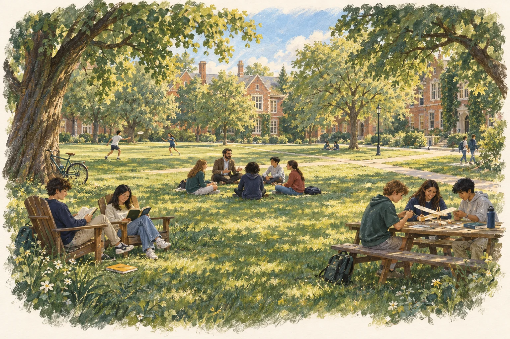

Advice needs a next step.
A conversation can inspire a learner, but turning it into an achievable plan, useful practice, and a better question takes ongoing support.
The Yard is building a connected learning platform for students, mentors, and parents. Expert-led projects, guided practice between sessions, and evidence of what a learner can do independently.
Families of 12–16-year-olds seeking sustained STEM mentorship.
An eight-week project program with weekly mentoring and guided practice.
More independent progress per learner. Less preparation time per mentor.
Interactive prototype · All records are examples
Plan a path through the room. Explain your choice, then use your mentor’s feedback to design a better test.
The green path is one possible route. It passes next to an obstacle. What would you test before choosing it for a real robot?
Review the original attempt and choose a next practice. Your assignment appears immediately in the student workspace.
Would one successful trial be enough evidence of reliability?
A fixed sample prompt, not an automated assessment of the learner.Follow the chosen project, submitted work, and mentor direction. This example reports activity; it does not claim improved ability.
Begin in the student workspace. Submit a practice attempt, then switch to the mentor view to assign a follow-up. The activity sequence will appear here.
A new challenge completed independently, assessed against clear criteria. More messages or completed tasks alone would not demonstrate learning.
Our starting hypothesis: families already paying for enrichment need a better way to carry expert guidance into consistent, independent work between sessions.
A conversation can inspire a learner, but turning it into an achievable plan, useful practice, and a better question takes ongoing support.
Preparing lessons, reconstructing what happened between meetings, and reviewing scattered work limit how many learners a mentor can support.
Families coordinate lessons, projects, and reminders. They need evidence of what is changing and a trusted person to guide the next step.
These needs come from the founder’s experience and are hypotheses for customer discovery, not findings from a completed study.
The proposed system connects a mentor’s intent to practice, evidence, and review—so the next interaction starts with context.
Mentors define the challenge, prerequisites, evaluation criteria, and when a learner needs human help.
An AI assistant offers approved resources, questions, and practice variations within the mentor’s plan.
Keep original work, revisions, explanations, and assistance used. Link each observation to the underlying evidence.
Prepare concise review packets and flag uncertainty. Mentors inspect the work and decide what comes next.
Development scope: a learning record, mentor review tools, constrained AI assistance, and evaluation on independent tasks. Expert routing quality and time savings still need validation.
Start with families of 12–16-year-olds already investing in STEM enrichment. Deliver the program directly, then test distribution through mentor and school partners.
A starting price hypothesis to test through customer interviews and paid commitments.
A defined mentoring program with a named lead mentor, a weekly rhythm, and support between meetings. The software connects that experience across student, mentor, and parent.
A simple pilot economics model. Adjust the inputs to see why mentor preparation time and delivery quality matter to the business.
Eight weeks. Four learners per group. One mentor hour per group per week, plus preparation minutes per learner per week. Lead mentor rate: $75/hour. Two shared specialist hours: $250/hour. Variable software and support: $75/learner/program.
Contribution = revenue − these delivery costs. Excludes acquisition, payment processing, refunds, founder time outside delivery, product development, fixed overhead, and taxes. It is not profit or a forecast.
All inputs are planning assumptions. No measured AI efficiency gain, validated pricing, or realized margin is implied. Lower preparation time is only useful if learner outcomes and mentor quality hold.
The long-term opportunity is to distribute the structure of a research apprenticeship: better questions, disciplined investigation, expert standards, and feedback on real work.
Turn domain knowledge into sequences of challenges, worked examples, common misconceptions, and criteria for good reasoning. Improve them through expert review.
Give trained educators and near-peer mentors a shared curriculum, evidence-backed review tools, and a route to specialist help. Teaching quality remains a requirement to validate.
Use group clinics and milestone reviews for questions needing advanced expertise. Support routine practice between those encounters through the platform and lead mentor.
A $600 pilot is a premium validation step. Broad affordability would require demonstrated delivery savings, viable partner models, and locally appropriate pricing or funding. It has not yet been achieved.
AI makes continuous assistance technically feasible. The company must show that an expert-supervised system produces learning families value at sustainable delivery cost.
Compare baseline and final unfamiliar tasks using a predefined rubric. Separate assisted practice performance from unaided understanding, and include a follow-up check.
Measure preparation, review, and support minutes per learner. Compare conventional delivery with the assisted workflow while tracking feedback quality and unresolved errors.
Test paid commitments, attendance, voluntary practice, and second-project enrollment. Track the full cost of delivery and customer acquisition.
A reliable mentor workflow, a network of effective educators, and permissioned examples connecting expert feedback to subsequent independent performance. Their value depends on demonstrated quality and usefulness—not accumulation alone.
Research mentorship and coached learning communities already exist. Our hypothesis is that continuity between sessions and better use of mentor time can support a distinct product. That difference must be tested against existing alternatives.
A learning network needs a reason to join before it has a crowd. The initial offer must be valuable with one founder, a small mentor team, and a committed group of learners.
Recruit the first families through direct relationships around a specific project and founder-led sessions. Define the mentor commitments before selling the program.
Give a small group recurring sessions, peer discussion, and a project review. Test whether the relationships and learning experience motivate a second project.
With permission, share student work and the reasoning behind revisions. Track referrals, returning mentors, and whether another lead mentor can deliver the program effectively.

The founding vision: a nursery for the mind, accessible beyond campus.Professors expanded what I thought was possible. Harvard Yard showed me the value of a place where people read, build, and learn together. As a parent, I also see the cost and coordination involved in making those experiences available to a child.
The Yard brings that motivation to a concrete problem: making expert guidance more continuous, visible, and accessible through technology.
The next step is a paid pilot and a measured comparison of learning quality and mentor effort. Explore the workflow, assumptions, and validation plan.